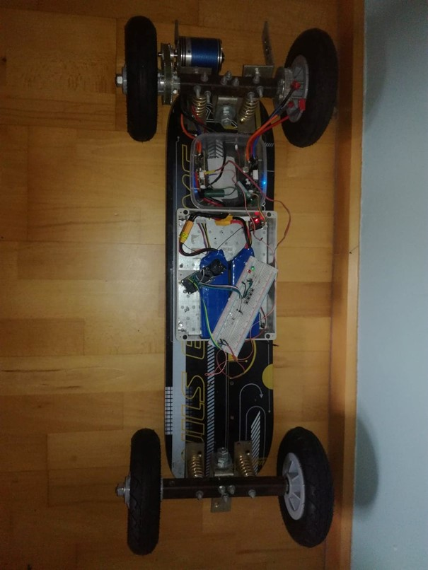
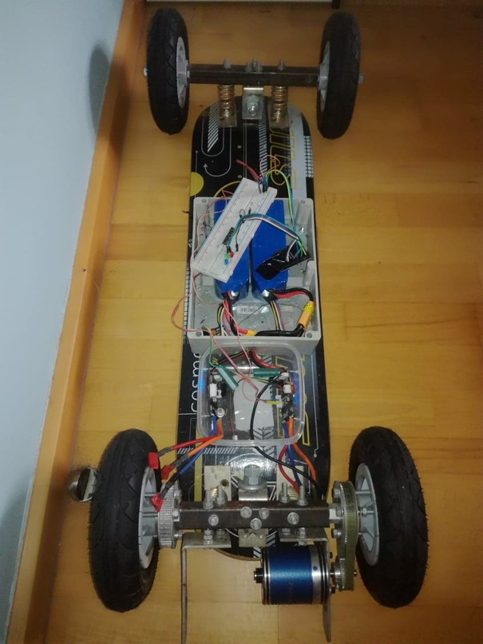
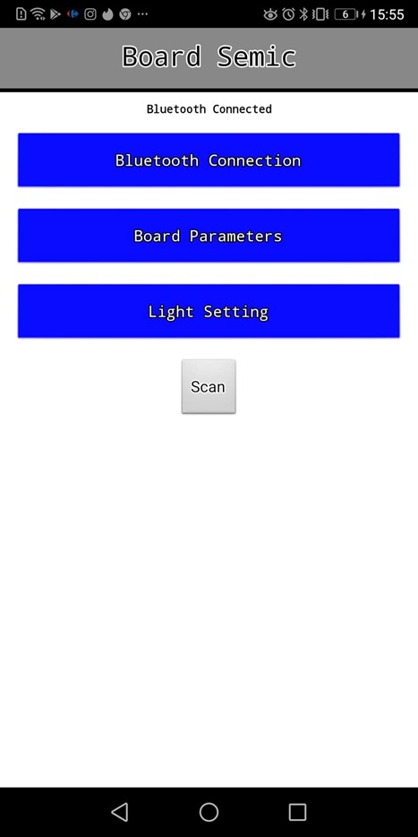
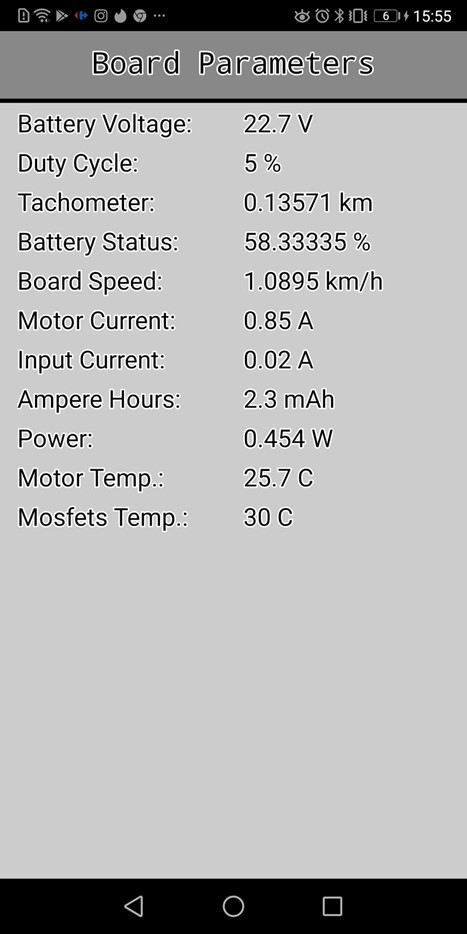
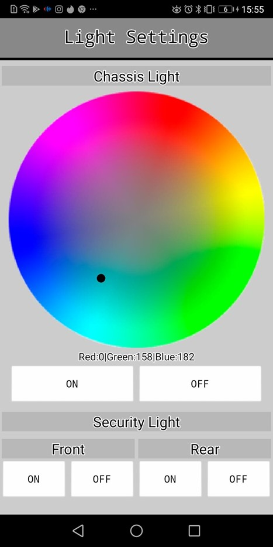

Nasze projekty
Zimowy 2020/21
Zegar Cyfrowy
Autorzy: Alicja Szymańska, Mateusz Nawrot
Zegar oparty jest na miktrokontrolerze Arduino Pro Mini oraz zegarze czasu rzeczywistego RTC DS1307. W projekcie 128 diod RGB na taśmie. Posiada 8 kolorów, które zmieniają się co 10 sekund, a na koniec sekwencji zmian jednolitych kolorów, diody świecą w kolorach tęczy. Komunikacja odbywa się poprzez magistralę I2C. Planowane jest dodanie trybu oszczedzania energii, przycisków odpowiedzialnych za zmiane intensywności świecenia oraz czujnika ruchu, który zmieniałby tryb świecenia.
Wygląd zegara inspirowany był tym projektem. Cała reszta jest pracą własną autorów.
Zdalnie sterowana deskorolka
Autor: Wojciech CieślakProjekt deskorolki elektrycznej powstał z pasji do pojazdów elektronicznych.
W projekcie wykorzystano:
- sterownik silników BLDC oparty na stm32 z wykorzystaniem oprogramowania opensource
- esp32, które służy do komunikacji między smartfonem a deskorolką,
- taśmę led do podświetlenia deski w nocy,
- silnik BLDC, którego sprawność jest większa niż tradycyjnego silnika,
- pilot do sterowania deski(komunikacji radiowej między sterownikiem, a użytkownikiem).
 
Powstała aplikacja na android, która kontroluje parametry deski np. stan baterii, temperatura itp.. Aplikacja komunikuje się z ESP32 za pomocą Bluetooth. ESP32 odbiera ramkę danych ze sterownika i wysyła informacje zwrotną do smartphone(użytkownika). W trakcje realizacji jest rozszerzenie możliwości aplikacji o sterowanie deską za pomocą smatphone.
  